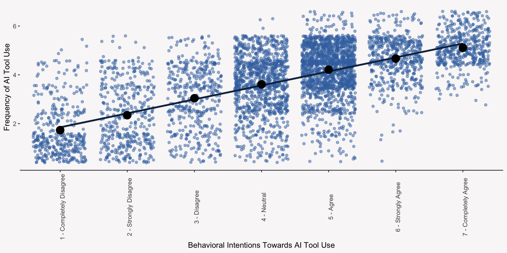
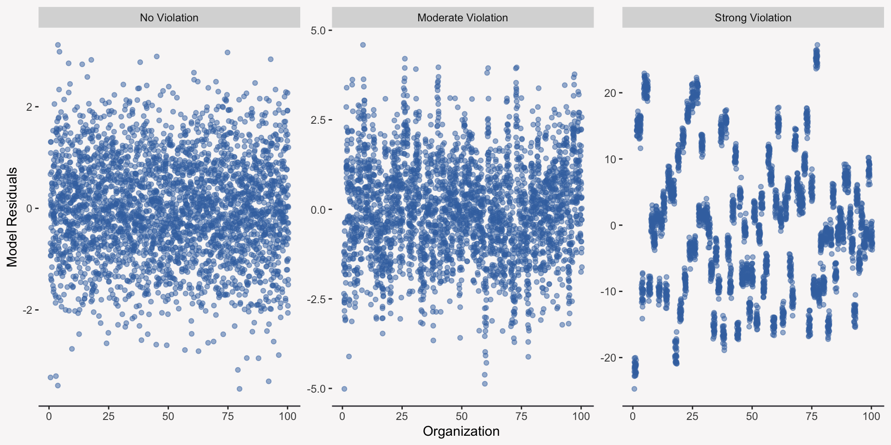
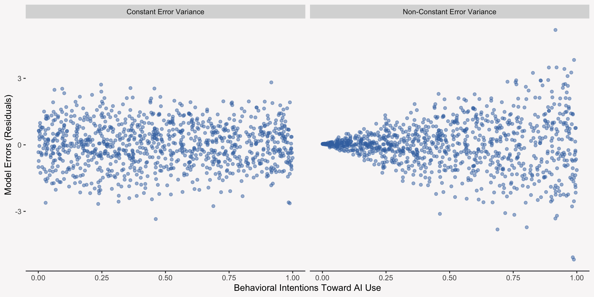
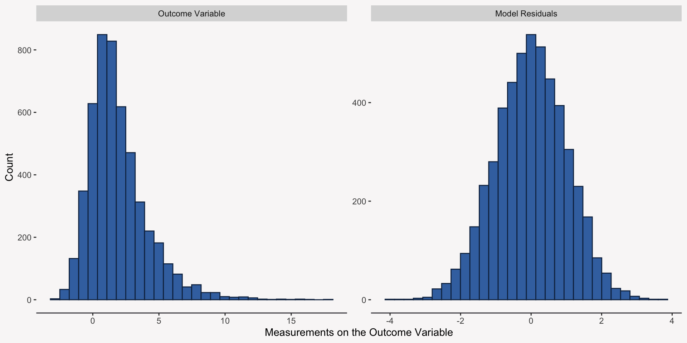
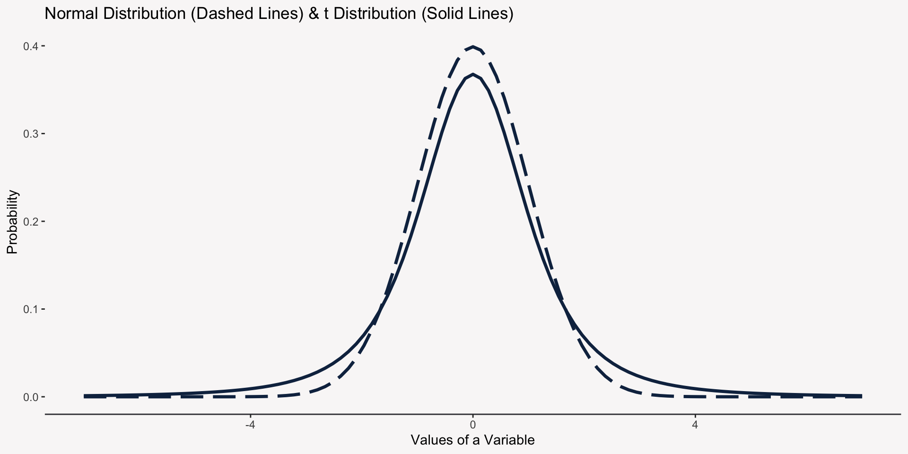
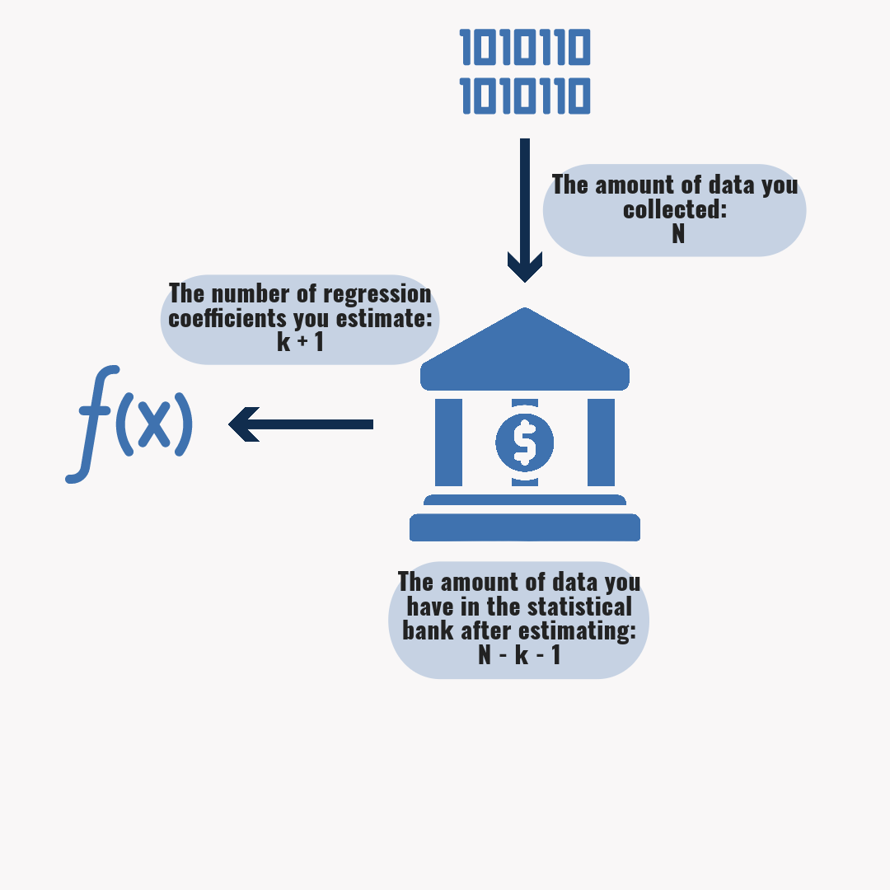
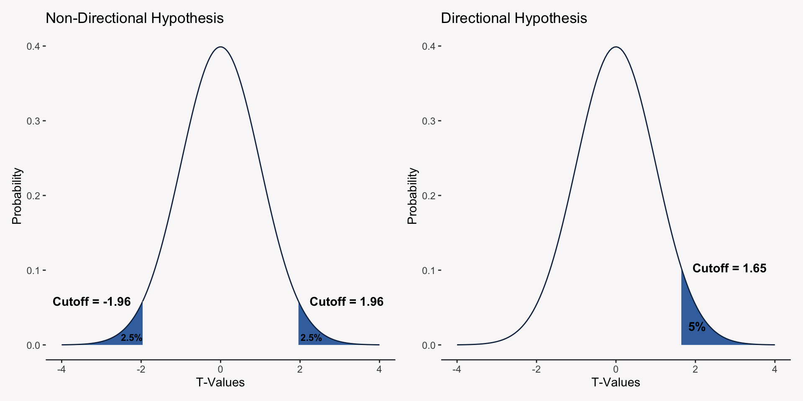
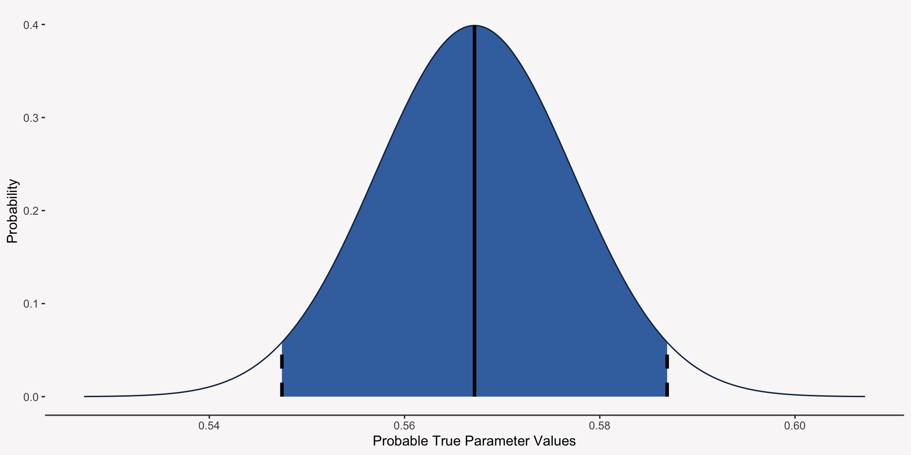

Finish up stats for 35 mins (6:25 PM - 7:00 PM ET)
Overview
A review of statistical inference
Setup of our working example
Introduction to inference for linear regression
Goals
Improve your understanding of statistical inference
Understand the assumptions underlying linear regression and their importance
Understand hypothesis testing under linear regression
Inferential Statistics
Usually, when you analyze your data you want to generalize the results from your specific dataset to a broader population or more general process. This is called statistical inference.
Inference about Population or Process?
When we make statistical inferences we are generally making inferences to one of two “things”:
Population such as all eligible US voters
Data Generating Process which is the population model you believe generated your data
Data Generating Process & Your Collected Data
In social scientific and behavioral research, it is usually assumed that there is a data generating process that produces the data you have collected. The specific data you collected is useful because it allows us to make an inference about the underlying data generating process.
Our Data Generating Process: The Regression Model
In our course examples, we have been assuming that our data is produced by a process that we can represent as a population linear regression model:
To keep things simple, our assumed data generating process will be:
\[Y_{\text{Freq. AI Use}}=\beta_0+\beta_1X_{\text{Beh. Intent.}} + \epsilon\]
Estimating the Regression Coefficients of our DGP
It is easiest to illustrate what we mean when we say “estimating our data generating process” by looking at the equations used to estimate the coefficients in a simple regression model:
We will never observe the true errors (residuals) of our regression model, \(\epsilon\). For each observation in our data, we have to estimate \(\epsilon\) by computing:
\[Y_{\text{Freq. AI Use}}-(\hat{\beta}_0+\hat{\beta}_1X_{\text{Beh. Intent.}})\]
These observed errors are commonly referred to as residuals. The bulk of the linear regression assumptions are about the distribution of the unobserved error!
Estimating the Error Variance
Because we will never know the true model errors, we have to use the errors we computed from our regression model to estimate things like the variance and standard deviation of error:
\[Var(Y - \hat{Y})=\sigma^2_{error}\]
The Tools of Statistical Inference
We have two inferential tools to help us determine if our data supports our data generating process:
Statistical Significance Tests
Confidence Intervals
The Four Components of a Significance Test & Confidence Interval
In order to ensure our inferential tools work, we need to assess the quality of their four different components:
Statistical Model Assumptions
Hypotheses (directional or non-directional)
Test Statistic
P-Value (for significance tests)
Statistical Assumptions
Assumptions of Linear Regression Analysis
To ensure that inferences made about our regression coefficients are appropriate, we have to make six assumptions:
Validity of our Data
Representativeness of our Data
Additivity & Linearity
Independence of Errors
Equal Variance of Errors (Homoscedasticity)
Normality of Errors
Validity of Our Data
One of the most important assumptions we need to make is that our data maps to our research questions. We want to make sure that the data we have collected is a valid representation of the phenomenon in which we are interested!
There is a whole field called Psychometrics that is dedicated to issues around the validity of measurements!
Representativeness of Our Data
The data you are estimating your regression model from should be representative of the population you are making inferences about. This applies even when we are making inferences about a data generating process.
Additivity & Linearity
Additivity and Linearity is the assumption that the conditional mean of the outcome variable is a linear function of the different predictor variables:
Violations of this assumption happen when there is a nonlinear relationship between your outcome variable and at least one of your predictor variables.
Additivity & Linearity: A Graphical View

Independence of Errors
The assumption of independent errors (homoscedasticity) means that once we control for all the predictor variables, then there should be no relationship among our model residuals (the part of our outcome variable that is not captured by our model).
Independence of Errors: A Graphical View

Equal Variance of Errors (Homoscedasticity)
The assumption of equal error variances means that the variance of our errors (residuals) is constant across all values of our predictor variables. A different way to say this is that our errors (residuals) are unrelated to to our predictor variables.
Equal Variance of Errors: A Graphical View

Normality of Errors
The normality of errors assumption means that our errors follow a normal probability distribution with a mean of zero and a variance equal to \(\sigma^2_{e}\).
Another way to state this assumption is that the distribution of your outcome variable when conditioned on all of your predictor variables follows normal probability distribution.
It is important to note that the distribution of your outcome variable without conditioning on your predictor variables need not follow a normal probability distribution!
Normality of Errors: A Graphical View

The Probability Model Implied By Our Assumptions
When taken all together, our linear regression assumptions imply the following probabilistic model for the conditional distribution of our outcome variable:
You can think of a hypothesis as a statement about the data generating process. This statement needs to be made before your analyses!
To setup a significance test, you will need to develop two kinds of hypotheses:
Null Hypothesis (\(H_0\)): Specifies that a parameter in your DGP takes on a specific value (usually 0).
Alternative Hypothesis (\(H_a\)): Specifies that a parameter takes on some alternative range of values (e.g. all positive values).
Setting Up the Null Hypothesis
The null hypothesis is usually specifies that the parameter you DGP takes on is 0:
\(H_0\): There is no relationship between behavioral intentions to use the AI tool and the frequency with which the tool is used (\(\beta_1=0\)).
Although it is incredibly rare, the null hypothesis can specify values other than 0:
\(H_0\): The relationship between behavioral intentions to use the AI tool and the frequency with which the tool is used is equal to -.50 (\(\beta_1=-.50\)).
Setting Up the Alternative Hypothesis
The alternative hypothesis can be a directional or non-directional statement:
Directional \(H_a\): The relationship between behavioral intentions to use the AI tool and the frequency with which the tool is used is positive (\(\beta_1 > 0\)).
Non-Directional \(H_a\): There is a relationship between behavioral intentions to use the AI tool and the frequency with which the tool is used (\(\beta_1 \neq 0\)).
Testing Our Results with a Test Statistic
What is a Test Statistic?
The test statistic is a number that tells us how many standard errors our estimate falls from the parameter value specified by the null hypothesis. Generally, a test statistic has three pieces:
The estimate being tested (our estimated regression coefficient)
The value specified by the null hypothesis (almost always 0)
The standard error of the estimate
T-Test: The Test Statistic for Linear Regression
We use a T-test to test the significance of any single regression coefficient:
Remember the sampling distribution is a hypothetical distribution of all our possible \(\hat{\beta}_1\) estimates and the standard error is the standard deviation of that distribution.
Standard Error of a Partial Regression Coefficient
The standard error of a partial regression coefficient tells how close our estimated coefficient is to the true value of that coefficient. The SE is affected by four different components:
An estimate of the overall amount of modeling error: \(\hat{\sigma}^2_{error}\)
The variance of the predictor variable: \(Var(X_j)\)
The overall sample size: \(N\)
The proportion of variance in the predictor variable that is explained by the other predictor variables: \(R^2_j\)
To test the significance of a t-statistic, we have to use a probability distribution called the Student’s t distribution.
We have to use the Student’s t distribution for one very specific reason: we are using an estimate of the model error variance (\(\sigma^2_e\)) because we do not know the true value. If we knew the true value, we could use that in the SE formula and then calculate the significance of the test statistic using the Normal distribution.
Student’s t Distribution
The Student’s t Distribution or t distribution is a probability distribution that in many ways is like the Normal distribution (symmetrical around its mean of 0). However, the t distribution allows for more extreme observations compared to the Normal distribution—the t distribution tails are fatter than the Normal distribution tails.

Student’s T Distribution & Degrees of Freedom
The shape of the t distribution is controlled by something called the degrees of freedom. The larger the degrees of freedom, the more similar the t distribution is to the Normal distribution.
What on Earth are Degrees of Freedom?
Think of your data as “statistical cash” to be spent on estimating the regression coefficients of your model. Degrees of freedom is almost like an accounting system that tracks:
Total net worth at the start: \(df_{Total} = N\)
Cash spent on your model: \(df_{Model} = k + 1\)
Cash remaining: \(df_{Residual} = N-k-1\)
Statistical Accounting with Degress of Freedom

Don’t Go Broke
You always want to have a positive (and large) amount for \(df_{Residual}\). We need a positive amount of \(df_{Residual}\) in order to test how well our model fits (e.g. calculate the \(R^2\)). If we spend ALL of our statistical cash on estimating regression coefficients, then we will not have any cash left over to determine our model fit.
P-Value for a T-Statistic
To calculate a p-value for our t-statistic, we need three things:
T-Statistic
\(df_{Residual}\): This tells us which t distribution to use
The direction of the hypothesis (directional or non-directional)
The p-value will tell us the probability of seeing a value as large or larger than our t-statistic, if we believe the true t-statistic should be 0.” Then, if the p-value is very small (less than or equal to .05), we say it’s pretty unlikely, so we can reject our null hypothesis.
An Example with our Data
model <-lm(freq_use_ai ~ beh_intent_ai + tech_anx, data = data_lecture)summary(model)
Call:
lm(formula = freq_use_ai ~ beh_intent_ai + tech_anx, data = data_lecture)
Residuals:
Min 1Q Median 3Q Max
-3.7311 -0.6897 -0.1087 0.8499 3.1599
Coefficients:
Estimate Std. Error t value Pr(>|t|)
(Intercept) 1.34183 0.07029 19.090 <2e-16 ***
beh_intent_ai 0.56717 0.01007 56.349 <2e-16 ***
tech_anx -0.01379 0.01218 -1.132 0.258
---
Signif. codes: 0 '***' 0.001 '**' 0.01 '*' 0.05 '.' 0.1 ' ' 1
Residual standard error: 1.029 on 4997 degrees of freedom
Multiple R-squared: 0.4477, Adjusted R-squared: 0.4475
F-statistic: 2025 on 2 and 4997 DF, p-value: < 2.2e-16
Critical Regions for Non-Directional & Directional Hypotheses
The shaded areas are called critical (or rejection) regions.

Calculating P-Values for Directional Hypotheses
R (and all other statistical software programs) provide the p-value for a non-directional hypothesis. It is totally fine to use this p-value even if you specify a directional hypothesis, you just need to be aware that the p-value for a directional hypothesis will always equal:
The F-Test is a test of two identical null hypotheses:
\(R^2 = 0\)
\(\beta_1=\beta_2=...=\beta_p=0\)
If the p-value for the F-test is less than or equal to .05 you can conclude that the \(R^2\) is not equal to 0 and that at least one of your regression coefficients is not equal to 0.
The Underlying Math of the F-Test
See me after class if you really want to know this…
Feeling Condfident with Confidence Intervals
What is a Confidence Interval?
A confidence interval is a range of values that the true parameter likely falls within.
Estimate: The regression coefficient from your model
Standard Error: The standard error of that regression coefficient
T Value for the 97.5th Percentile: A value that is roughly 2
Confidence Interval for Behavioral Intention
We are 95% confident that the true value for the effect of behavioral intention on frequency of AI use is in this range: 0.547, 0.587

Compability Interval > Confidence Intveral
I believe the best way to understand the confidence interval is as a compatibility interval. The interval tells us the range of null hypothesis values that we would not be able to reject (they would have p-values greater than or equal to .05).
Here is a example where a finding is statistically different from 0, but not practically different. The P-Value does not tell you the estimate is not practically different from 0, but the confidence interval does: